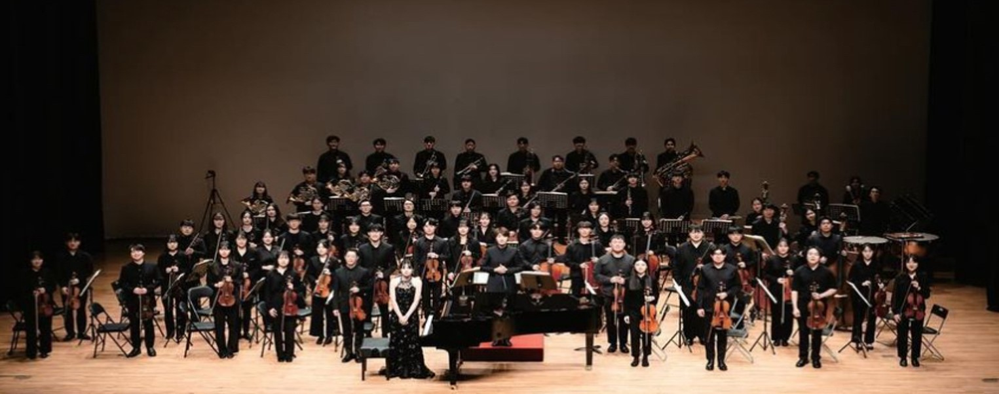
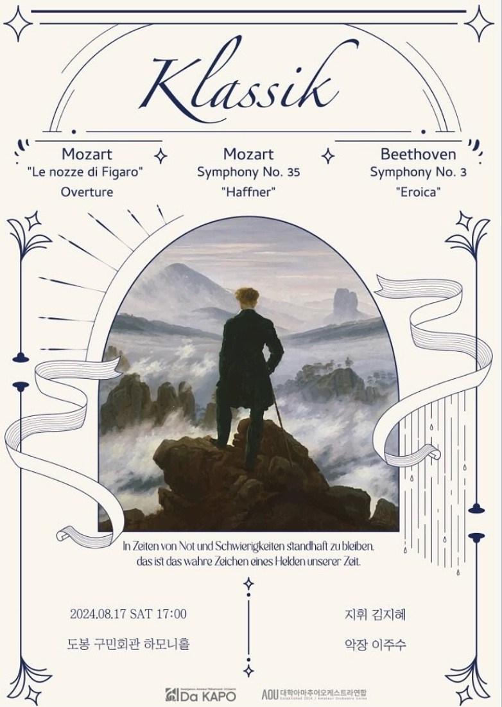

“처음부터”라는 의미를 담아, 초심을 잃지 않고 음악에 대한 열정을 이어가는 동아리
“처음부터”라는 의미를 담아, 초심을 잃지 않고 음악에 대한 열정을 이어가는 동아리
내용



2017 다카포 창단 · 창단 연주회
2017.02.14 초대회장 | 임가현
2017.08.31 회장 | 임가현 악장 | 조승윤 지휘 | 안민호
2018 제 2 · 3회 연주회
2018.03.09 회장 | 이정윤 악장 | 조승윤 지휘 | 안민호
2018.10.31 회장 | 강지수 악장 | 정유섭 지휘 | 최광희
2019 제 4 · 5회 연주회
2019.05.03 회장 | 임민영 악장 | 이민규 지휘 | 최광희
2019.10.31 회장 | 임민영 악장 | 맹채윤 지휘 | 최광희
2022 제 6 · 7회 연주회
2022.02.11 회장 | 안희범 악장 | 이민규 지휘 | 정예진
2022.08.13 회장 | 안성현 악장 | 전지유 지휘 | 선중규
2023 제 8 · 9회 연주회
2023.03.18 회장 | 박서현 악장 | 이민규 지휘 | 선중규
2023.08.12 회장 | 박서현 악장 | 박재서 지휘 | 선중규
2024 제 10회 연주회
2024.03.09 회장 | 심승우 악장 | 박채서 지휘 | 김지혜